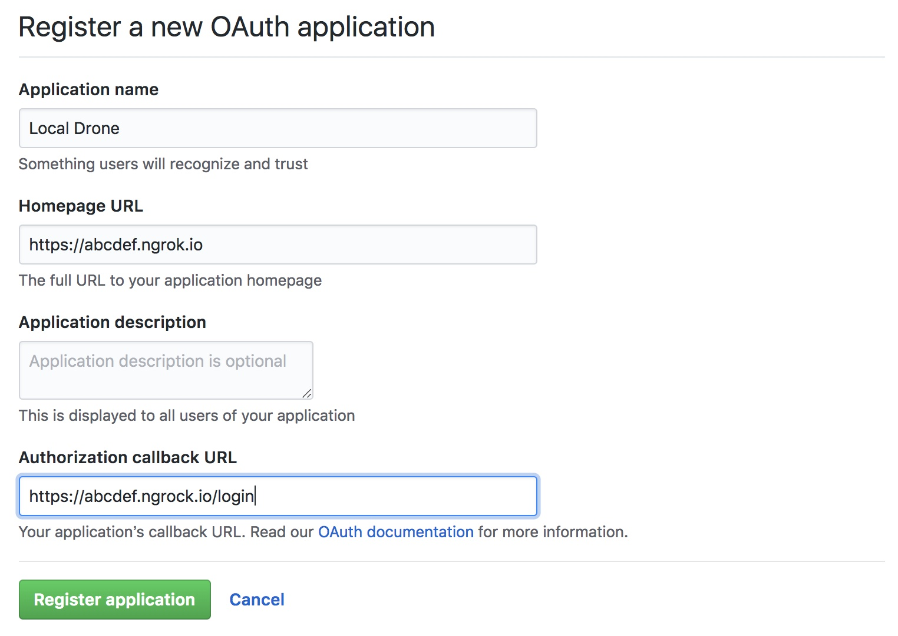

Drone 1.0 を docker-compose up する
新年一発目です． Drone CI が，めでたくバージョン1.0(まだ rc だけど)をリリースしてドキュメントも刷新されたんですけど，0.8.x 時代にはあった docker-compose でのやり方が書いてなかった(見つけられなかった)ので，そのメモ書きです． ちなみに経緯は，結構前に作っていた drone-haskell と言う Drone CI の Haskell クライアントを Drone 1.0 に対応したくて，手元で Drone を起動しようとしたためです． めでたく，Haskell クライアントも 1.0 に対応したので，それの紹介もおまけでします．
Drone CI
Drone.io, Inc. というアメリカ企業が開発している継続的デリバリーを支援するためのプラットフォームである． 同種のものに Jenkins や TravisCI，CircleCI などが挙げられます(多分)． 単純な利用者側(リポジトリにCIなどを設定する側)としては，TravisCI・CircleCI に似ているが，これらとの大きな違いとして，Drone は GitHub 上に OSS として公開されている点だ:
あと個人的に特徴的なのが Plugin という形で様々な機能を提供している点だ(このあたりは Jenkins に似ているのかな)． 公式のページより，組織アカウントを見た方が早い気がする(これに限らずドキュメントが色々追いついてない印象):
docker-compose する
さて本題． ローカルで Drone サーバを docker-compose up して GitHub で利用する． GitHub で利用するには Drone を GitHub の OAuth App として登録する必要がある． OAuth App にするにはパブリックな URL が必要なので，ngrok を利用する:
$ ngrok http 8000これで仮に abcdef.ngrok.io と言うドメインを得たとする． 次のような OAuth App を登録する:

注意点として，8.0.x のときは callback URL が /authorize だったのに対し，1.0 では /login となっている． あとは次のような docker-compose.yml ファイルを書けば良い:
version: '2'
services:
drone-server:
image: drone/drone:1.0.0-rc.3
ports:
- 8000:80
- 443:443
- 9000
volumes:
- /var/run/docker.sock:/var/run/docker.sock
- .:/data
restart: always
environment:
- DRONE_GITHUB_SERVER=https://github.com
- DRONE_GITHUB_CLIENT_ID=XXX
- DRONE_GITHUB_CLIENT_SECRET=YYY
- DRONE_RPC_SECRET=ZZZ
- DRONE_SERVER_HOST=abcdef.ngrok.io
- DRONE_SERVER_PROTO=https
- DRONE_TLS_AUTOCERT=true
drone-agent:
image: drone/agent:1.0.0-rc.3
command: agent
restart: always
depends_on:
- drone-server
volumes:
- /var/run/docker.sock:/var/run/docker.sock
environment:
- DRONE_RPC_SERVER=drone-server:9000
- DRONE_RPC_SECRET=ZZZ
- DRONE_RUNNER_CAPACITY=2XXX は GitHub OAuth App の Client ID を，YYY には Client Secret を記述する． DRONE_RPC_SECRET の ZZZ は server と agent で同じであればなんでも良いのだが，ここに openssl rand -hex 16 で生成すると書いてあるので，それに従う． これであとは docker-compose up をすれば無事起動完了だ．
$ curl http://localhost:8000/version
{"source":"https://github.com/drone/drone.git","version":"latest","commit":"ffe3ad2aa2a30d0ba4d848c1cd0f61238b73a21c"}ちなみに
Drone ってクラウドのフリープランがあったのに記事を書いてる時に気づいた(遅い):
$ curl https://cloud.drone.io/version
{"source":"https://github.com/drone/drone.git","version":"latest","commit":"f16b67b54fb462d3a4b2cfa93f527d4f8d1e19af"}わざわざ検証用に立てる必要なかったな笑 ちなみにフリープランでは5リポジトリまでと書いてあったが，試しに6個 Activate したらできた． 謎．
おまけ: drone-haskell
ここからおまけ． drone の Haskell クライアントを作った． ちゃんとバージョン 1.0 に対応させてます:
Drone 1.0 の RESTful API に関するドキュメントは見つからなかったので，唯一公式から出ている Drone クライアントである drone-go のコード読んで実装した． なので，drone-go が間違ってたらこっちも間違ってる．
利用したパッケージ
HTTP クライアントには req を，レスポンス型には extensible を利用した． このあたりの組み合わせについては昔記事に書いた:
ちなみに，管理がめんどくさい(加えて extensible は今の LTS にはまだないし)ので，Stackage や Hackage には登録していない． なので Stack でビルドするには extra-deps に書き加える必要がある:
ちょっと工夫
- テストは Servant でモックサーバーを立てて行ってる
- テストケースも drone-go から取ってきてる
- https://github.com/drone/drone-go/tree/master/drone/testdata
- API のパスに formatting を使ってみた
- あくまで試しに
- こんな感じ